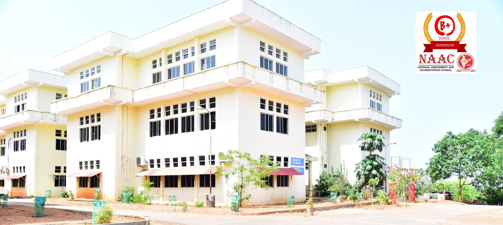

COLLEGE OF ENGINEERING VADAKARA

Vision
To be a world class technical education institute, with the highest quality and standards of excellence to meet the
demands of business,
industry and the community and thereby to contribute to India’s socio-economic progress.
Mission
To develop high quality personnel with a sound footing on basic engineering principles, innovative research
capabilities and exemplary
professional conduct to lead and to use technology for the progress of mankind,
adapting themselves to changing technological environment with
the highest ethical values as the inner strength.
Key Highlights
ACADEMICS
- A Premier Institute with NAAC B+ Accreditation and Certified by ISO 9001-2015.
- Institution under CAPE, Estd by Kerala Government.
- TEQIP funded institution by MHRD
- Consistently holding top ranks in university examinations.
- Transparent and meritorious admission process through Centralized Allotment Process by Entrance Commissioner.
- Academic Networking with NIT Calicut and IIM Kozhikode.
- Best Engineering institute in Malabar as par latest KTU Ranking.
INFRASTRUCTURE
- ICT enabled smart class rooms
- Computerized library with OPAC, digital library, book bank for SC/ST students
- Wi-Fi (Cisco) facility as well as 24/7, 130 Mbps leased line
- Conference Rooms with videoconferencing facilities
- Individual in College and Centralised Placement Cell under CAPE
- Spacious Canteen and separate cafeteria.
- Separate sick rooms inside campus and well furnished student hostels
- Medical Center in collaboration with the Co –operative Hospital, Vadakara
STUDENT SUPPORT AND PROGRESSION
- Exposure through Professional Bodies like IEEE, WIE, ISTE, CSI, FOSS and IE
- Department Associations ensuring student participation in technical, cultural and managerial events
- Innovation and Entrepreneurship Development Center for nurturing start up concepts
- Industry Institute Interaction Cell for ensuring industrial exposure
- Student Enrichment Programmes – Personality and Aptitude development Programmes, Coaching for competitive exams like GATE etc,
communication skills development, student seminars and presentations, national seminars and technical symposia for research scholars
and engineering students
- Placement Cell to promote job requirements of students as per their tastes and skills